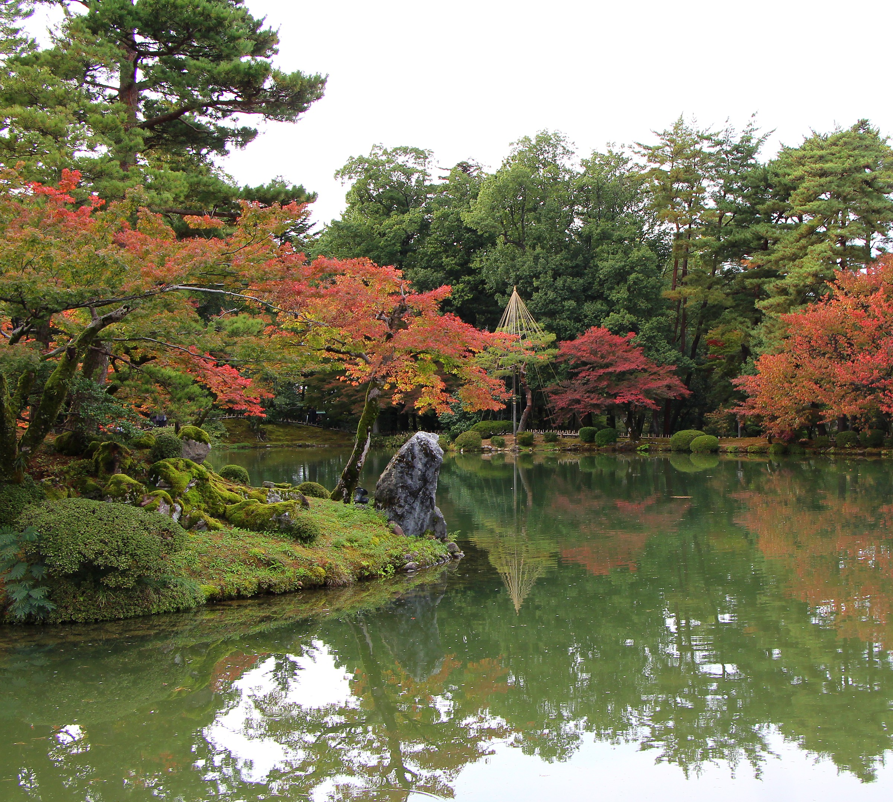

蓮池庭：故事的起點
第五代藩主前田綱紀將作事所移回城內，在面向城郭的坡地築別邸並造園。早期庭園稱為蓮池庭，供接待與賞楓雅集使用。[1]

A GARDEN TO WANDER
紅葉向水面伸展，松樹以蒼綠回應；岸上的石、枝間的繩，在倒影裡又構成另一座庭園。這一組照片拍攝於 2023 年 11 月 16 日，是能登半島地震前走訪金澤、北陸時留下的旅拍。池水、紅葉與迎冬的雪吊，保留了那次旅程中的兼六園記憶。
兼六園位於金澤城旁，是歷代加賀藩主逐步營造的大名庭園，與偕樂園、後樂園並稱日本三名園。它的精采，在於沿著池岸漫步時，開闊、幽深與細密的人工作景輪流出現。[1][4]
拍攝於 2023 年 11 月 16 日（依原檔 EXIF）。本輯收錄 10 張風景照片；部分重新裁切，以避開原畫面中的遊客。點選照片可放大欣賞。
AUTUMN COLLECTION · 2023.11.16
十幅旅景 / 點選放大
紅、綠與灰白的石，把池岸分成細緻層次；水面讓這些層次緩緩相接。
· IMG_6503
一塊立石，讓視線停下；低伏的青苔，襯出岸線自然的轉折。
· IMG_6502
裁取遠岸的一隅，讓秋葉、常綠樹與雪吊在同一個畫面裡對話。
· IMG_6500
唐崎松的雪吊，從高處向枝條展開。原圖下方有人群，這裡保留松冠與繩線的景觀細節。
· IMG_6504
石燈籠立在岸邊，水中的倒影把它的輪廓繼續向下延伸。
· IMG_6501
從低處看水，樹枝倒映其間；小小的流路，也容得下天空。
· IMG_6505
樹影圍住水邊小亭，池畔的深綠與紅葉在午後光線中層層展開。
· IMG_6493
從古木、石燈籠到圓整的灌木，近遠之間可以看見庭園維護的細節。
· IMG_6494
高起的繩線與伸展的楓枝相映，在灰白天空前勾出迎冬的輪廓。
· IMG_6497
竹籬、灌木與水草構成連續的前景，走近時才看見庭園細緻的節奏。
· IMG_6499
第五代藩主前田綱紀將作事所移回城內，在面向城郭的坡地築別邸並造園。早期庭園稱為蓮池庭，供接待與賞楓雅集使用。[1]
1759 年火災損及部分庭園。其後前田治脩主持整備，1774 年造翠瀧、夕顏亭，1776 年建內橋亭，使水景與茶亭重新成為庭園的重心。[1]
第十二代藩主前田齊廣興建竹澤御殿，同年庭園命名為兼六園。松平定信取《洛陽名園記》中的六勝之意，為這座庭園定下名字。[1][4]
第十三代藩主前田齊泰拆除竹澤御殿、擴大霞之池並整備植栽；1860 年撤去蓮池庭與上部庭園之間的門牆。1863 年建巽御殿，即今日成巽閣，園貌逐漸接近現在。[1]
1874 年全面向市民開放；1922 年列為國家名勝，1985 年升列特別名勝。原本屬於藩主的遊賞空間，成為大眾共享、持續維護的文化景觀。[1]
THE SIX QUALITIES
六勝，是三組看似難以共存的美。園名借用宋代李格非《洛陽名園記》的觀點，讚賞庭園能把這些景觀融為一體。[2][4]
宏大是明亮開闊，幽邃是安靜深遠。從池畔的廣闊視野轉入林下，路徑、樹木與遮蔽帶來不同的空間感。
人力是精細安排，蒼古是歲月沉澱。修剪的樹形、石與橋顯示匠心；古木、樹蔭與青苔，則讓人工庭園散發悠久氣息。
水泉是池、溪與瀑布，眺望是向遠方展開的視野。高台上的庭園引入水流，使近處賞水與遠方觀景能同時成立。
照片賞讀：池景呈現水泉與開闊感，苔石與修整松枝呈現人力與蒼古。本輯沒有遠眺全景，未以其他地點照片代替。
READING THE LANDSCAPE
兼六園屬築山、林泉與迴遊式庭園。池、土丘、茶亭與曲折路徑共同安排視線，遊人沿路移動，景色也隨位置改變；池中島嶼並寄託神仙思想與長久繁榮的願望。[5]
園內最大的池，約 5,800 平方公尺，由前田齊泰擴充至今日規模。觀光協會的解說以琵琶湖及竹生島說明池與蓬萊島的取景意象；水面也把岸上景物延伸成倒影。[3]
北陸的雪濕重，雪吊以繩索支撐枝條，減輕積雪造成的負擔。唐崎松是代表景觀。本輯的松冠與雪吊近景，記錄了園丁為迎冬所做的照護。[3]
辰巳用水把犀川的水送入園內，經沉砂後供應曲水與池泉。地形高差還能形成噴水，展現造園與水利技術的結合。噴水不在本輯照片中。[3][5]
園中著名的徽軫燈籠以雙腳造型聞名。本輯裁切照片保留的是池畔燈籠與倒影，因角度不足以核定身分，圖說保留通稱，不把它直接標為徽軫燈籠。[3]
這組照片裡，紅橙葉色、常綠松枝、苔地與水面各有不同質感。賞景時可以先看色塊，再看岸線，最後看倒影如何把畫面接起來。這是本輯照片的視覺賞讀。
歷史及庭園解說查核日期：2026.11.21。文字以繁體中文整理；旅拍觀察與官方史實分別標示。
來源為使用者提供的「北陸之旅」資料夾：IMG_6493、IMG_6494、IMG_6497、IMG_6499 與 IMG_6500 至 IMG_6505，共 10 張。所有成品均另存副本，依畫面裁切避開人物，檢視水平並針對需要的照片微調角度，彩度約增加 23%，輕調亮度與對比。未以生成式影像補景。原始檔未改寫。拍攝日期依原檔 EXIF DateTimeOriginal：2023 年 11 月 16 日；相機未記錄時區，因此不另推定時差。作者姓名未另行推定。